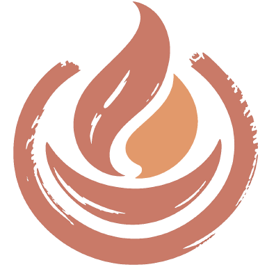
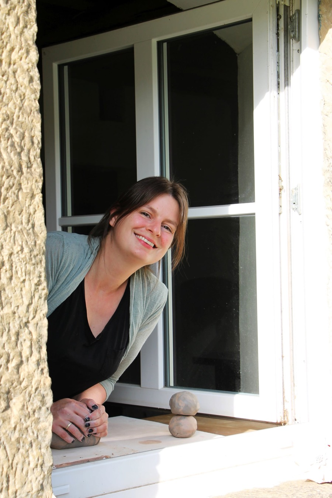

Steinheim bei Detmold
Töpferkurse auf dem alten Gut
Drehscheibe oder Handaufbau. Auch wenn du noch nie Ton in der Hand hattest.
Ich bin Franziska. Diese Seite ist noch im Aufbau. Bald findest du hier alle Termine und buchst deinen Kurs direkt online.

Bis dahin erreichst du mich direkt
- E-Mail franziska.faust.keramik@gmail.com
- Telefon +49 177 6029155
- WhatsApp Nachricht schreiben
Wintruper Straße 72 · 32839 Steinheim